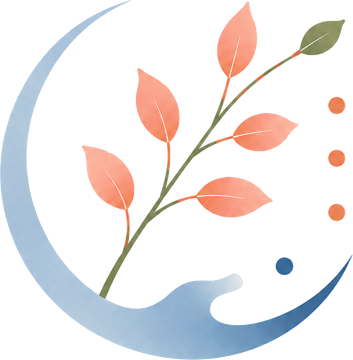

Stress & émotions
Mieux gérer les périodes de stress et apprendre à disposer de techniques de respiration et de détente au quotidien.

SOPHROLOGIE
Harmonie du corps et de l'esprit
Je suis Isabelle, sophrologue. Je vous accompagne pour vous aider à retrouver un peu de calme, mieux vivre vos émotions et avancer avec sérénité.
Un visage derrière l'accompagnement
Prendre le temps
de souffler,
simplement.
Sophrologue certifiée de l'IFS de Paris [titre / école, ex. RNCP], j'ai à cœur d'offrir un espace d'écoute où chacun se sente accueilli, sans jugement, avec ce qu'il amène ce jour-là.
[Deux ou trois phrases sur votre parcours : ce qui vous a menée à la sophrologie, vos valeurs, votre approche.] Mon approche est concrète et progressive : les exercices que nous explorons ensemble sont pensés pour être repris simplement, au quotidien.
[Prénom]
Selon ce que vous traversez aujourd'hui
Mieux gérer les périodes de stress et apprendre à disposer de techniques de respiration et de détente au quotidien.
Travailler la perception de soi, préparer une situation particulière et renforcer ses ressources personnelles.
Mettre en place des exercices de détente et favoriser un environnement propice au repos et à la récupération.
Être accompagné lors d'une période de transition, d'un changement ou d'une étape importante.
Un temps d'échange et de pratique
Il n'est pas nécessaire de savoir faire quoi que ce soit avant de commencer. Nous prenons d'abord le temps d'échanger, puis les exercices sont adaptés à votre situation et à votre rythme.
Faire le point sur votre demande, votre contexte et l'objectif de l'accompagnement.
Découvrir et expérimenter des exercices adaptés : respiration, détente et techniques de sophrologie.
Échanger sur votre expérience et identifier les exercices que vous pourrez reprendre entre les séances.
Trois possibilités, selon vos besoins
Environ 1h à 1h15 par séance, dont un temps d'échange avant et après la pratique.
[Ville] et ses alentours ([rayon] km) pour les séances à domicile. La visio est possible partout.
[Tarif] € la séance. [Forfaits / conditions éventuelles.] Le premier échange téléphonique est gratuit et sans engagement.
Je viens chez vous pour une séance dans votre environnement habituel.
Une séance à distance, depuis chez vous, dans un cadre adapté à la pratique.
Un rendez-vous dans un espace dédié à la séance. Les modalités pratiques vous sont précisées lors de la prise de contact.
Paroles de personnes accompagnées
« [Court témoignage : ex. "Après quelques séances, j'ai retrouvé un sommeil plus serein et surtout des outils simples que j'utilise encore au quotidien."] »
Un premier contact, sans engagement
Vous vous demandez si la sophrologie peut répondre à votre besoin ? Vous pouvez simplement appeler ou écrire. Un premier échange permet de faire le point et de voir ensemble si cet accompagnement vous convient.
Je réponds généralement sous 48h. Le premier échange est gratuit et sans engagement.